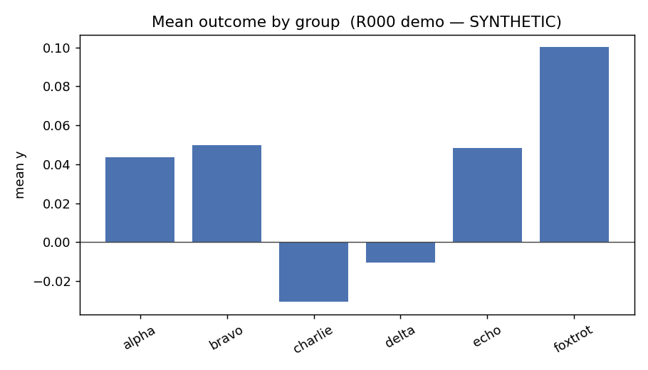

一个 round，从头到尾
读一封信
理解这个空间最快的方式，是完整读一次往来。下面是 R000——随协议一起发布的完工示例。它的数据是刻意合成的（所以在 任何机器上都能跑），但它的形态和一个真实 round 一模一样。等某个进行中的项目批准 公开一次真实往来，这一页就会换上真信。
一个问题，装在一个文件夹里，放在一个分支上
一个 round 始于有人搭好文件夹、填好 ASK.md。开头是一个机器可读的
「信封」：
round: R000
title: Worked example — mean outcome by group
topic: T00
kind: analysis
proposer: "@example-proposer"
data: [] # 真实 round 会在这里列出它触碰的表为什么重要：在读任何一行代码之前，数据方已经知道这个
round 属于哪个课题、是什么类型、影响范围有多大——会碰到哪几张表。
然后是提问本身，用平实的文字：
问题。各组的平均结果y是多少？组间的 离散程度如何比较？
预期产出。一张表（group, n, mean_y, sd_y）、一张带 零参考线的均值柱状图，和一段文字解读。
契约所在：「预期产出」就是完工的定义。执行方跑到这些东西
存在为止——不多，也不少。野心放在问题里，边界写在这里。
可运行、有边界、不知道数据在哪
提议方附上 run.py。它永远不知道数据的真实位置——它读一个由数据方
在运行时设置的环境变量；它只能写进自己的 ./result/ 文件夹，别处一律
不行：
RESULT = Path(__file__).parent / "result"
def load_demo():
"""合成 (group, y) 数据，确定性（seed 42）。"""
rng = random.Random(42)
...
# 真实 round 读的是真实的表：
# DATA_ROOT = Path(os.environ["DATA_ROOT"])
# df = pl.read_parquet(DATA_ROOT / "<table>.parquet")这段代码要触碰真实数据之前，先过一遍自动扫描——网络访问、
子进程、文件改写、读取密钥、运行时装包，全都会被标出——然后数据方的人还要亲自
读一遍。之后才在沙箱里运行：非 root、数据只读、无网络。这就是三道人闸中的第二道：
数据闸。
聚合结果回到同一个线程
数据方运行代码，把结果——文字结论、图、小表——推回同一个 Pull Request。 这一封的开头，是整个协议里嗓门最大的一条规则：
为什么这么大声：没跑过真实数据的输出必须一眼可辨——因为
它差点就不是这样：早期部署中，一批没有标注的冒烟测试表格险些被当成真实结果合并。
这里的规则是伤疤，不是理论。真实 round 里，数据方的运行结果会替换掉这个
占位输出。
结论。平均结果 y 从 −0.031（charlie 组）
到 +0.100（foxtrot 组）不等，六组的离散程度几乎相同（sd ≈ 0.15）——这是构造
使然。

result/figures/y_by_group.png，
提交在 round 的文件夹里。局限。全部：数据是合成的。本 round 只演示格式。
值得注意的习惯：每封回信都必须写明它不能证明什么。
诚实的局限说明是契约的一部分，不是客套。
合并即归档，永久有效
持续检查盯着每一个 round：没有超过几 MB 的文件、没有原始数据格式、目录结构
完整。检查全绿、双方的人都满意之后，round 合并——它在 main 上的
文件夹从此成为这个问题及其答案的永久、可引用的记录。死路也会合并——作为尸检
报告：档案记住试过的一切，以及为什么停下。
这就是完整的循环。一个问题、一个文件夹、一个 Pull
Request——提问、运行、回信、合并。协议里
其余的一切，都是为这次往来服务的细节。
亲手做一遍：入职演练会让你（和你的 AI 代理）在约 30 分钟内复刻这个 round——见 ONBOARDING.md。 原始文件在 exchange/R000-example-hello。